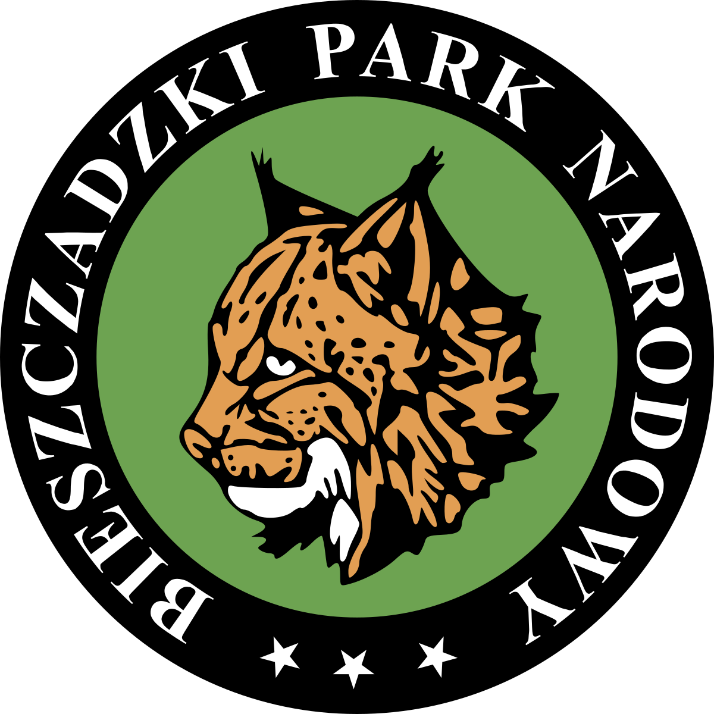

Bieszczadzki Park Narodowy
Park został utworzony w roku 197,3 a jego powierzchnia wynosi 292,02 km². Symbolem jest ryś, którego niegdyś zwano ostrowidzem. Park położony jest w Bieszczadach Zachodnich, w województwie podkarpackim. Jest jakby upchnięty w sam koniuszek Polski, tuż przy granicy z Ukrainą oraz Słowacją. Jest trzecim co do wielkości parkiem narodowym w Polsce i największym w polskich górach. Bieszczadzki Park Narodowy chroni najwyższe partie polskiej części Karpat Wschodnich. W skład parku wchodzi gniazdo Tarnicy wraz z Haliczem, Rozypańcem oraz Szerokim Wierchem. Znajdziecie tutaj również Bukowe Berdo, obie połoniny, czy też grupę Wielkiej Rawki. Czyli wszystko to, co najpiękniejsze w Bieszczadach. Ścisłej ochronie podlega prawie 70% jego powierzchni, co jest najlepszym wskaźnikiem pośród wszystkich 23 parków narodowych w Polsce. Można tutaj spotkać prawie wszystkie krajowe duże ssaki drapieżne: niedźwiedzia, watahy wilków, rysie, żbiki. Są również żubry i jelenie, które najmocniej dają o sobie znać podczas jesiennych rykowisk.